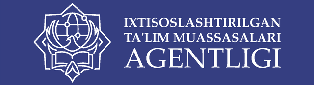

Maktab haqida

Kegeli tumani ixtisoslashtirilgan ta’lim muassasasi
Qoraqalpog‘iston Respublikasi, Kegeli tumani. Ixtisoslashtirilgan ta’lim muassasalari agentligi tizimida.
Kegeyli tuman ixtisoslashtirilgan maktabi aniq va tabiiy fanlarga ixtisoslashtirilgan davlat maktabidir. Maktab Ixtisoslashtirilgan ta’lim muassasalari agentligi tizimida faoliyat yuritadi va o‘quvchilarni oliy ta’limga, fan olimpiadalariga va xalqaro sertifikatlarga tayyorlaydi.
Maktabda o‘quvchilar uchun o‘z oshxonasi ishlaydi. Maktab internat emas — yotoqxona mavjud emas, o‘quvchilar kunduzgi shaklda o‘qiydi.
Maktab maqomi va akkreditatsiyasi
- Turi
- Davlat ixtisoslashtirilgan umumiy o‘rta ta’lim maktabi
- Tashkil etilgan
- 2022
- Boshqaruv organi

O‘zbekiston Respublikasi Ta’lim va ilm-fan vazirligi huzuridagi Ixtisoslashtirilgan ta’lim muassasalari agentligi gov.uz/ima ↗- Sinflar
- 5–11
- Ta’lim tili
- Qoraqalpoq tili
- Bitiruvchilarga beriladi
- Umumiy o‘rta ta’lim to‘g‘risida davlat attestati
- Baholash tizimi
- 5 ballik: 5 — a’lo, 4 — yaxshi, 3 — qoniqarli, 2 — qoniqarsiz
Universitetlar uchun: maktab profili (ingliz tilida, PDF) →PDF ↓
Maktabimiz
Yorug‘ sinflar, laboratoriyalar va keng kirish zali — o‘quvchilarimiz kunini shu yerda o‘tkazadi.
Maktab tarixi
- 2022
Maktab ochildi
Kegeli tumanida aniq va tabiiy fanlarga ixtisoslashgan maktab faoliyatini boshladi.
- 2024
Xalqaro imtihonlar
O‘quvchilarimiz birinchi IELTS sertifikatlarini oldi. Bugun 16 nafar o‘quvchining IELTS sertifikati bor.
- 2025
Milliy sertifikat va olimpiada
2025/2026 o‘quv yilida 95 ta milliy sertifikat imtihoni topshirildi (avvalgi yili 32). AKHU STEM olimpiadasida bronza medal.
- 2026
Sayt va Study abroad markazi
kegeyliqm.uz 4 tilda ishga tushdi: maktab haqida ma’lumot va chet elda o‘qishga tayyorlov vositalari.
Maqsad, missiya va qadriyatlar
Maktabning rasmiy maqsadi va missiyasi
Maqsadi
Davlat ta’lim standartlariga muvofiq har bir o‘quvchining ta’lim-tarbiya olishi, aniq va tabiiy fanlar, O‘zbekiston tarixi va xorijiy tillarni chuqurlashtirib o‘qitishga yo‘naltirilgan.
Yosh avlodning O‘zbekistonda amalga oshirilayotgan islohotlar mazmun-mohiyatini chuqur anglaydigan, har tomonlama raqobatbardosh, erkin fikrlaydigan intellektual, ilmiy va ijodiy qobiliyatlarini ro‘yobga chiqarish orqali ma’naviy kamol topishiga ko‘maklashish, atrof-olamga ongli munosabatini shakllantirish, har tomonlama dunyoqarashi keng shaxsni tarbiyalashdan iborat.
Missiyasi
Iqtidorli o‘quvchilarga ularning salohiyatini maksimal darajada qondira oladigan ta’lim berish imkoniyatini yaratish orqali ta’lim tajribasini oshirish, doimiy o‘zgaruvchan global jamiyatda o‘zini o‘zi boshqaradigan va yetuk ongli shaxslarni tarbiyalashda ijodiy va innovatsion fikrlashni rivojlantirish orqali faol fuqarolar va ilm olishdan charchamaydigan o‘quvchilarni tarbiyalashdan iborat.
Bilimda sifat
Chuqurlashtirilgan matematika, ingliz tili va STEM.
Xalqaro nuqtai nazar
IELTS, SAT va chet elda o‘qishga ko‘mak.
Halollik
Ochiq, adolatli qabul va baholash.
Hamkorlik
Ota-onalar, o‘qituvchilar va hamkorlarning birgalikdagi ishi.
Natijalar
Qisqacha ma’lumot
- Manzil9-uy, Kegeyli Gúzari, Kegeyli shahri
- Yo‘nalishAniq va tabiiy fanlar
- OvqatlanishMaktab oshxonasi
- Ish vaqtiDushanba–shanba, 08:30–17:00
- DarslarDushanba–juma